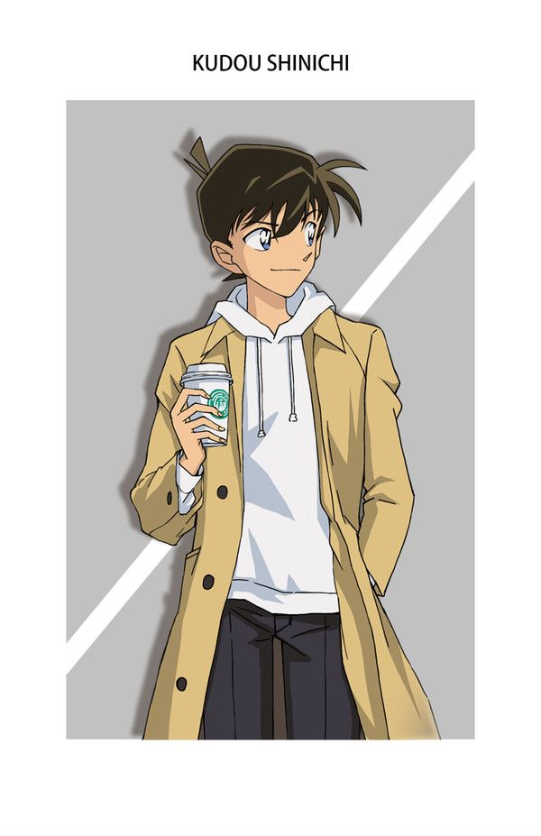

Kudo Shinichi is a fictional character created by Gosho Aoyama, a Japanese manga artist in Detective Conan (Case Closed). This series is Aoyama's most well-known creation and has been collected in 97 volumes as of December 18, 2019.
Kudo Shinichi has a childhood dream of becoming a detective like Sherlock Holmes. He has the ability to catch crucial evidences in complex cases. Kudo is in a romantic relationship with Mori Ran. In order to hide his real identity, he now goes under the alias Edogawa Conan.
Kudo Shinichi (Jimmy Kudo) is a high school detective in Teitan High School. He specializes in solving murder cases. He is well-known by many professionals, including law enforcement officials. Shinichi’s father, Kudo Yusaku is a mystery writer. Shinichi’s mother, Kudo Yukiko, is a movie star. In Tropical Land Theme Park, Shinichi encounters two men from a secret criminal organization who force feed him a strange poison that causes his body to shrink back to first grade age. Kudo Shinichi later adopts the name Edogawa Konan to disguise his identity from the criminal organization.
